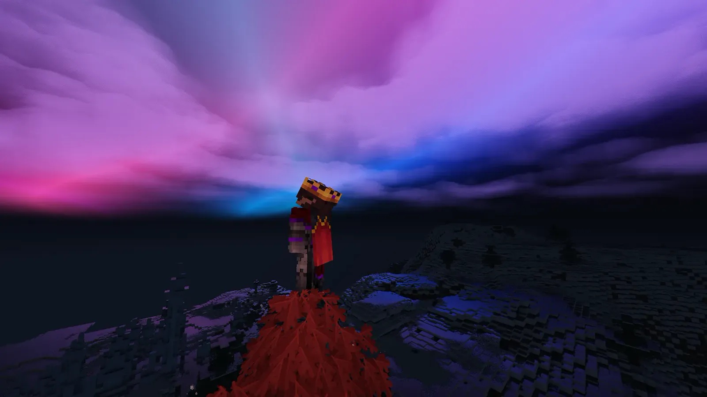

Star Engine (Odysseia Evolution)
The server core runs on Java 21 LTS and delegates network and transport graph resolution to native libraries (FFM) to relieve the main thread.
Goal: 20 TPS stable
High-engineering technical server directed by JackStar: 60+ Slimefun expansions, abyssal dimensions, pantheon gods and six gamemodes with isolated inventories. Prefer pure survival? Enter Classic.
Server Status
Getting Started
mc.drakescraft.cl (1.21.11). Bedrock: same address, port 25565. If your account isn't premium, use /register <password> <password> then /login./gamemodes or /lobby. Classic is vanilla Minecraft without machinery; Slimefun, SkyBlock and OneBlock are technical./guide, /sf guide, the web guide or ask SAORI and the community on Discord.Technical server: staff don't teach mechanics and losing items through misconfiguration is part of the game. If you prefer something simpler, play Classic. Details in the rules.
Sovereign Engineering · JackStar
We unite our own addons and systems in maintained suites by the team, to reduce plugin conflicts and keep performance stable.
The server core runs on Java 21 LTS and delegates network and transport graph resolution to native libraries (FFM) to relieve the main thread.
Goal: 20 TPS stable
We eliminate the wasteful overhead of Bungee servers. Via InvSwitcher-Drake and SQLite WAL, each gamemode keeps separate inventories, vaults (/pv) and economies. Your VIP ranks follow you everywhere.
Separate economies per gamemode
180+ micro-repos absorbed into the 8 official master suites of JackStar. Centralized tasks, duplication bug fixes and Tebex purchase verification.
StarSuites · Security under constant review
Dimensional Evolution · Season 2
While Dallas keeps your builds, ranks and inventories live on 1.21.11, we are preparing the transition to Paper 26.2: sovereign datapacks in Slimefun technical worlds while keeping Classic 100% pure.
Cursed and Blessed Altars, cauldron alchemy, void fishing and abyssal biomes built for endgame veterans.
High-density tectonic terrain paired with a rebuilt Nether featuring forbidden castles, reactors and volcanic deltas.
Colossal Norse citadels with custom loot tables and active elemental powers unlocked through combat advancements.
Custom-engineered suites tuned for 20 TPS, seamless Java/Bedrock crossplay, synced skins and /offhand support.
Visual Archive · DrakesCraft
Direct views from the DrakesCraft ecosystem: central sanctuaries, quantum Slimefun complexes, altered dimensions and community islands.



Complete Ecosystem
From nuclear automation and quantum botany to pure survival without mods. In DrakesCraft your playthrough advances at the pace you choose, backed by industrial-grade dedicated infrastructure.
Six Ways to Play
Each gamemode has its own pace, inventory and progress. You can switch paths without changing servers.

Machines, energy, gods, dimensions and the deepest endgame.
/slimefunVanilla survival, Terralith, homes and protections. No Slimefun.
/classicStart with the minimum and transform the void with Slimefun or classic style.
/skyblockOne infinite block that evolves with you, phase after phase.
/oneblockMine through a 16x16 chunk with trees, iron and stone; when exhausted another appears and biomes change every few chunks.
/onechunkPrototype machines and networks without compromising your survival.
/warp laboratory
New · Laboratory
Creative world, machinery, reactors, prototypes and experimentation. An isolated space to test ideas before bringing them to your base.
/sf cheatTemporary researchTests without real explosions
DrakesCraft Legacy
TheSavior22 creates DrakesCraft and defines its first identity.
The project passes to JackStar6677, who preserves its history and assumes its evolution.
Slimefun, Odysseia, infrastructure and custom systems expand the world.
Six gamemodes. One community. DrakesCraft keeps growing.
Active Community
Discord brings together announcements, support, ideas and those building their next project on the server.
Join DiscordOfficial Tebex Shop · Global Ranks
Your investment follows you across the entire network. When you buy a VIP or VIP++ rank on Tebex, your social benefits, /fly in claims, prefix and cosmetics activate automatically on Slimefun, Classic, OneBlock, SkyBlock and OneChunk.
VIP entry point. 3 private vaults (/pv), exclusive chat prefix and tablist, and expanded land protection.
See rank details ↗ Recommended Popular · $10.990 CLPFlight /fly in personal claims, 5 private vaults isolated by gamemode, speed and respect across the entire network.
See rank details ↗ VIP++ EndgameThe supreme category for massive industrial projects. Maximum storage capacity, priority and divine cosmetics.
Explore Titans Category ↗Community and Sponsorship
Thanks to those who drive DrakesCraft infrastructure and free development through GitHub Sponsors.

First official sponsor to believe in and support DrakesCraft Network infrastructure.
November on DrakesCraft · Community Event
"Another year compiling plugins at 3 AM fueled by coffee and making sure no reactor blows up… but the real gift is logging in and seeing all six worlds full of your builds, farms and friendships. This month the celebration belongs to you."
— JackStar6677 · November Schedule (Nov 1–29)
Throughout November—and especially during Birthday Week (Nov 22–29)—join community activities and votes to earn real server keys (Common, Classic and Slimefun Tech) plus essences for the Hercules, Hestia, Hermes and Hephaestus Relicaries.
/crates · /oraculo · /relicarios
Claim your available kits in your favorite gamemode through Odysseia. Every November community activity runs with zero risk to your builds and full inventory protection.
/kit · /modalidades · /lobby
Share your greetings, base screenshots or favorite memories on our official Discord. On November 29, SAORI publishes the special birthday sequence signed by the entire DrakesCraft community.
Birthday channel on Discord
The People Behind

Main owner and architect of DrakesCraft. Leads plugin development, network infrastructure, technical optimization and world evolution.


Your Story Starts Here
Six connected gamemodes. Dozens of technical systems. Your playthrough doesn't have to look like anyone else's.
mc.drakescraft.cl